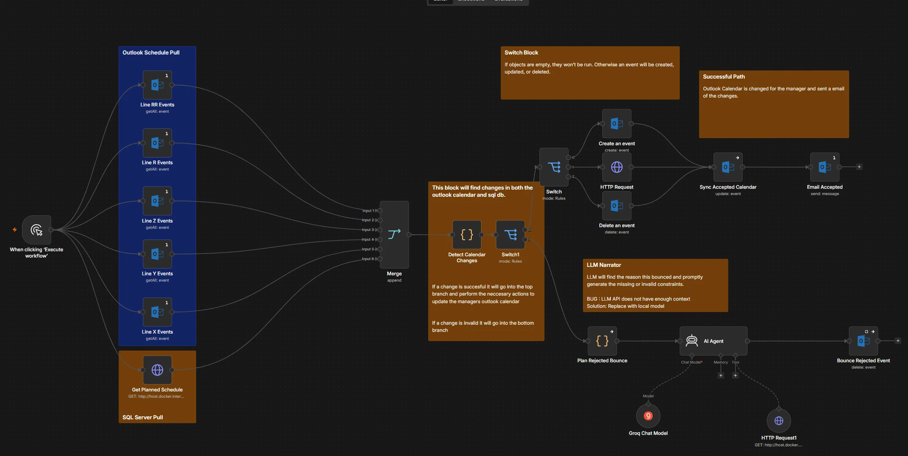
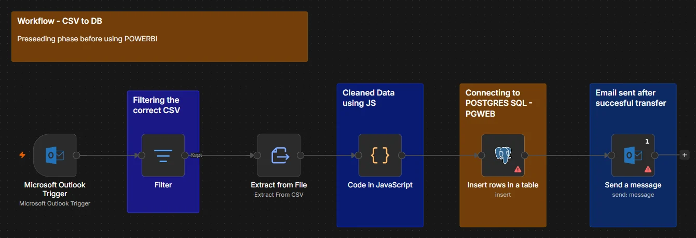
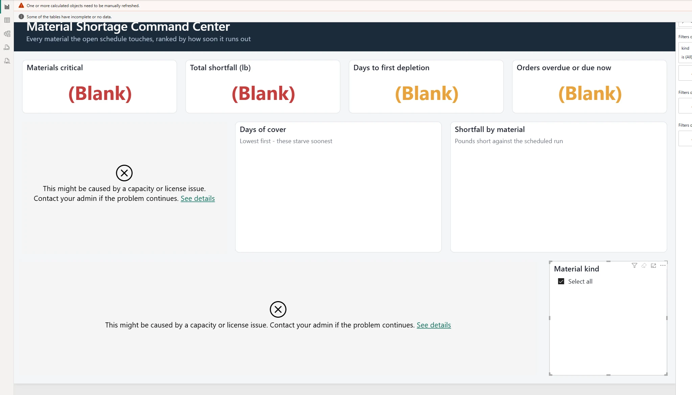

Plant operations,
automated
A 24/7 plastic-film plant runs five lines, four crews on a twelve-hour rotation, and six weeks of stacked orders. The information that keeps it moving lives in people's heads at shift change. This is an automation layer that reads the same database from four different angles — a scheduled briefing, a threshold forecast, a calendar event, and an approval chain that pauses on humans — and hands each role the one thing it needs. Pick a trigger and watch the run.
Run log
Dataset
Swipe the schematic sideways to follow the whole run
Reading the diagram. Orange dots are the payload moving between nodes. A yellow ring means the workflow has parked and is waiting on a person — the approval chain spends most of its life there. Dashed red is the rejection branch: an invalid calendar move bounces back with the reason attached instead of silently corrupting the schedule.

Watch it run
factory.db, the
five line calendars are pulled and merged, the affected events are corrected in
Outlook, and the manager gets a mail that names every change — action, order, line,
why, new start and end — closing with “database is the source of truth; the
calendar was corrected to match.” The reject branch was left unlinked for this
recording, so this is the accept path end to end.
1440 × 726 · silent
The reporting path


Rules reason,
the model explains
Every decision is deterministic and constraint-checked, because it has to be auditable. The LLM only turns the finished decision into a sentence a manager can read at 6am. It never writes to the schedule.
Four triggers,
one schema
Cron, threshold, webhook, and human gate all sit on the same sixteen-table SQLite database. Separate pipelines, shared data model — they meet at one seam, where an approved order enters the production queue.
Not an optimizer,
on purpose
Job-shop scheduling is NP-hard, so rescheduling is a transparent greedy heuristic with a human approval gate rather than a black box. A manager can read why an order moved and say no.
Edge cases,
baked in
The dataset ships with the failures on purpose: a line running behind its own clock, a PET shortfall against a 14-day lead time, an order stuck at chemical, and a cancellation that leaves a reclaimable gap.
† Power BI · offline The report above is the real thing, unlicensed. It ran on an enterprise licence tied to my student account, which lapsed at graduation, so the visuals return a capacity error and every measure resolves to blank. The workflows, the Postgres load and the database are unaffected — the reporting layer is a shell until I'm on a licence again, at which point it repopulates without being rebuilt.
‡ Shift briefing · on hold The scheduled handoff summary is blocked upstream of itself: reading Power BI needs an Azure app registration, and that needs the Pro or Premium licence that lapsed with the same account. The shape is settled — it mirrors the LLM branch of the calendar sync above, but takes its inputs from a Power BI GET, hands the agent a Power BI tool and a calculator, and ends by composing the briefing and mailing it to Outlook. The animation at the top of this case is that design, not a job currently on a timer.